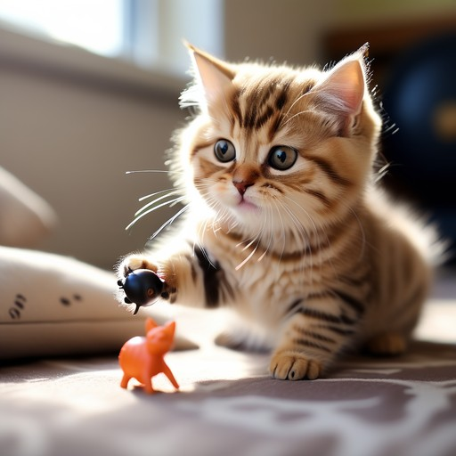

고양이(cat)는 식육목 고양이과 고양이속의 한 종(Felis catus)이다. 고양이의 신체적 특성과 습성은 다른 고양이과 동물들과 유사하게 빠른 반사신경, 탁월한 유연성, 날카로운 이빨, 넣고 꺼낼 수 있는 발톱 등이 있다.고양이(cat)는 식육목 고양이과 고양이속의 한 종(Felis catus)이다. 고양이의 신체적 특성과 습성은 다른 고양이과 동물들과 유사하게 빠른 반사신경, 탁월한 유연성, 날카로운 이빨, 넣고 꺼낼 수 있는 발톱 등이 있다.고양이(cat)는 식육목 고양이과 고양이속의 한 종(Felis catus)이다. 고양이의 신체적 특성과 습성은 다른 고양이과 동물들과 유사하게 빠른 반사신경, 탁월한 유연성, 날카로운 이빨, 넣고 꺼낼 수 있는 발톱 등이 있다.